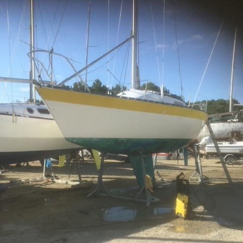

<div style="max-height: 600px; overflow-y: scroll;">
    <div style="display: grid; grid-template-columns: auto auto;">
        
        <div style="padding: 14px;">
            <h2>Gwenillic</h2>
            This is the small quarter from the 1970s plan Ron Holland. An Eyghtene 24.
            As soon as it was released, Bernard (from Ravignan) had a weakness for this boat, this is the second, 
            first for my children and now for my grandchildren. Very pretty little boat making a formidable upwind... holding downwind is a little more complicated.
            We are going to bring it up to speed in the Passe&#8209;Coque atmosphere. 
            This boat was at La Turballe for a while where it raced a lot. 
            Thibault Bailleul (the referent of the Heure Bleue) bought it then resold it to one of his friends who resold it to Bernard. 
            A good interior refit, hull painting and an electronic refit will be carried out so that it can complete the Passe&#8209;Coque Club fleet.    
        </div>
    <div>
        <h2>Plus d'infos...</h2>
        R&eacute;f&eacute;rent : Bernard de Ravignan
    </div>
</div>